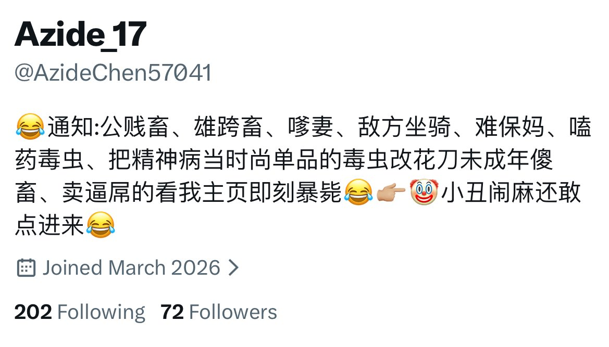

糯米🍬纸 (4.0寻回互关
@Numiouoo
@toukorina 卧槽饼说话笑死我了 对的对的
能不能加个不男不女半毒虫成年傻逼一点暴毙机会

柚原橙子🍄🥕超绝躁郁橙子饼
@toukorina
我点进去了你的主页 为什么还没暴毙 是不是本跨畜精神病不够诚心 还是你这72fo人数太少 打不过公畜的精虫上脑？
说实话这个标签我有点难选 因为我也不喜欢头上长屌满脑子只想操逼的公人 但我又是精神病 多少感觉自己有点时尚单品 能不能加个植物人选项给我这种不男不女半毒虫一点暴毙机会？ https://t.co/J2S8pLK6dE https://t.co/fQY27LElI0